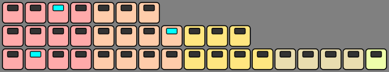

Polymeter

Polymeter is a MIDI sequencer for music that's in multiple prime meters (1, 2, 3, 5, 7, 11, etc.) simultaneously. Each track has its own loop length, and when the lengths differ, the tracks "slip" (or shift phase) relative to each other. The resulting interference pattern is sufficiently intricate that variations similar to the embellishments of a live performer can be generated algorithmically.
The current project is based on software I developed in the 1990s in order to compose polymeter-based electronic dance music. I'm rescuing from bit rot what might be (for all I know) the world's only sequencer optimized for polymeter. It's a long battle, but it's worth it to be able to compose complex polymeter again.
Apr 29, 2018
Version 0.0.1 allows unlimited track length, thanks to a completely redesigned UI. It's available for download; for details, check the release notes.
Apr 22, 2018
The initial alpha (0.0.0) is released.